✕
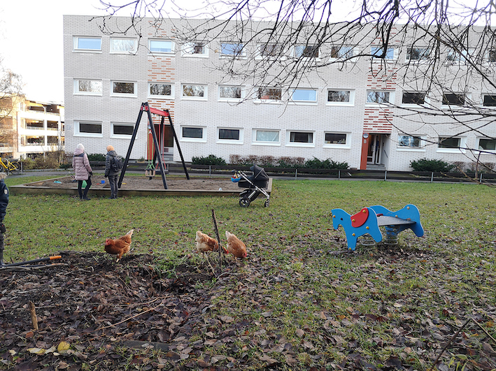
Urbant hønsehold - en del av fremtidens byutvikling
Masteroppgave, Vår 2021
Innsiktsarbeid og design for en slutt-bruker-effekt
Innsiktsarbeid og design for en slutt-bruker-effekt
Prosjektet gjøres i samarbeid med medstudent Ida Maria Melen. Det hele startet da Ida, under karantene i hjemmet sitt ved ring 3 i Oslo, oppdaget at noen i borettslaget hadde et hønsehus med noen høner på plenen utenfor borettslaget. Å besøke hønsehuset ble dagens høydepunkt, og det gjalt for flere i nabolaget. Barna kom stadig innom for å mate og se etter egg, og de voksne ble stående og prate. Vi ble begge betatt av tanken å ha høner i byen, og denne betattheten vokste til å bli en masteroppgave.
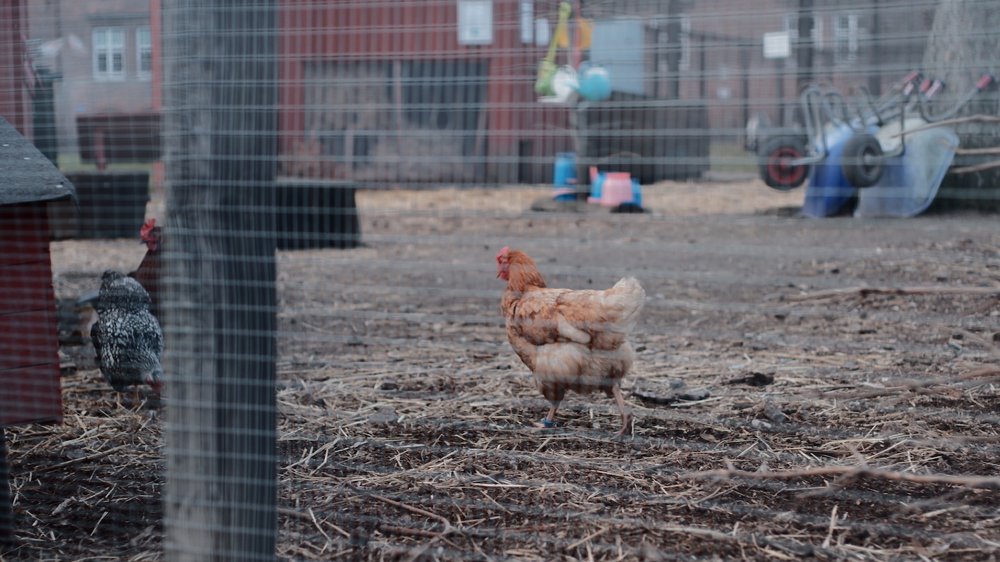
Til å begynne med har oppgaven gått ut på å forstå effekten av å inkludere hønsehold i by og forstå hvorfor denne effekten er viktig i byuviklingen. Videre går prosjektet ut på å finne ut av hvordan man kan designe for at flere kan ha glede av hønsehold i by. Dette innebærer å samle innsikt fra privatpersoner som har erfaring med høner i by, bybønder og besøksgårder som jobber med urbant landbruk og mennesker som utvikler fremtidens boliger og bylandskap. Det er fremdeles uvisst hvor prosjektet kommer til å lande, men en ting er sikkert: Høner er en del av det.
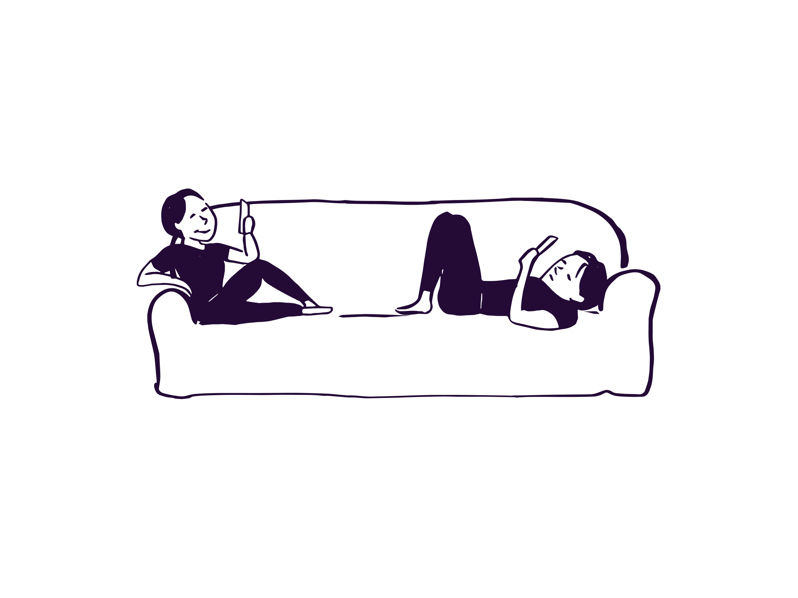

Smarttelefonen: Bortkastet eller verdifull tid?
Høst 2020
Innsiktsarbeid og kreativ problemløsning
Innsiktsarbeid og kreativ problemløsning
Prosjektet er gjort i samarbeid med medstudent Eirin Fossøy. Sammen har vi et kritisk blikk på smarttelefonens rolle i hverdagen, hos alle fra barneskoleelever til pensjonister. Gjennom research og samtaler med mennesker rundt oss var det tydelig at smarttelefonen er et tveegget sverd for mange: Den er underholdende og praktisk, samtidig som den er en tidstyv og et stressmoment. Gjennom dette definerte vi følgende problemstilling: Kan vi designe for å forbedre brukernes forhold til og opplevelse av tiden de bruker på smarttelefonen?
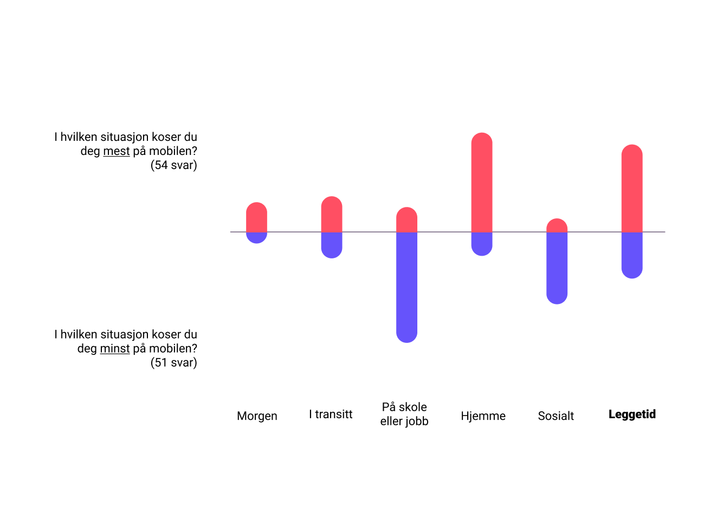
For å kunne besvare dette var det nødvendig å lære mer om forholdet brukerne hadde med sin smarttelefon. Hos brukergruppen unge voksne er mobilen ofte en fundamental del av hverdagen; mange kan ikke se for seg en hverdag uten. Gjennom å spørre unge voksne i hvilken situasjon de koser seg mest og minst med mobilen lærte vi at spesielt i situasjonen leggetid var det store splittelser: Mange koste seg med mobilen i senga og nesten like mange følte skam og misnøye. Problemstillingen spisset seg: Hvordan kan vi hjelpe unge voksne til å få bedre kontroll over sin mobilbruk på kveldstid?
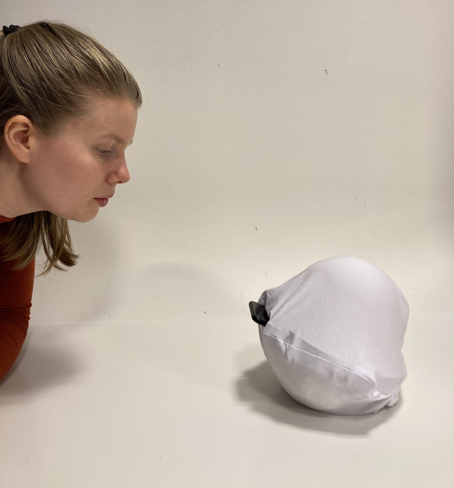
Konseptet Pusterom er et forslag som ønsker å oppnå nettopp dette. Brukeren legger fra seg mobilen i Pusterom for deretter å ta flere dype åndedrag. Objektet følger pusten til brukeren ved å ekspandere og krympe i takt med inn- og ut-pusten. Deretter blir mobilen låst inne fram til alarmen går neste morgen. Pusterom representerer en overgang fra kognitiv stimulans til kroppslig stimulans, noe som gjør brukeren mer avslappet og klar til å legge fra seg mobilen på slutten av dagen.
Prosjektet var en øvelse i selvstendighet og selvsikkerhet i rollen som designer gjennom å definere og følge vår egen plan kun ved hjelp av veileder. Vi valgte å bruke semesteret til å teste ulike designmetoder og fokusere på prosessen framfor resultatet, noe som har gitt gode erfaringer og ferdigheter. Vi valgte rett å slett å ha det gøy og lære så mye som mulig fremfor å stebe mot en perfekt leveranse. Resultatet er et prosjekt jeg er veldig stolt av.
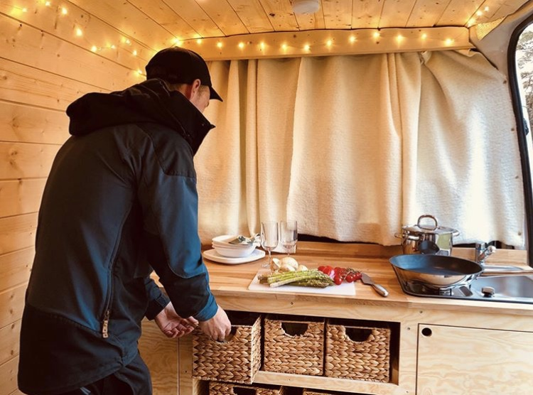
En campervan med et nytt formspråk
Høst 2018
Prosjektplanlegging og bedriftssamarbeid
Prosjektplanlegging og bedriftssamarbeid
Prosjektet er gjort i samarbeid med medstudent Ida Maria Melen. Høsten 2018 skaffet vi oss drømmeprosjektet: Muligheten til å designe innsiden av campervanene til det nyoppstartede campingutleiefirmaet Cabin Campers. Som friluftsliventusiaster og tilhengere av “tiny living” passet dette oss midt i blinken. Gjennom samarbeid med bedriften, intervjuer, fokusgruppe og estetiske studier utviklet vi et konsept inspirert av norsk hyttestil og basert på behovene til en campingturist på tur i Norge.
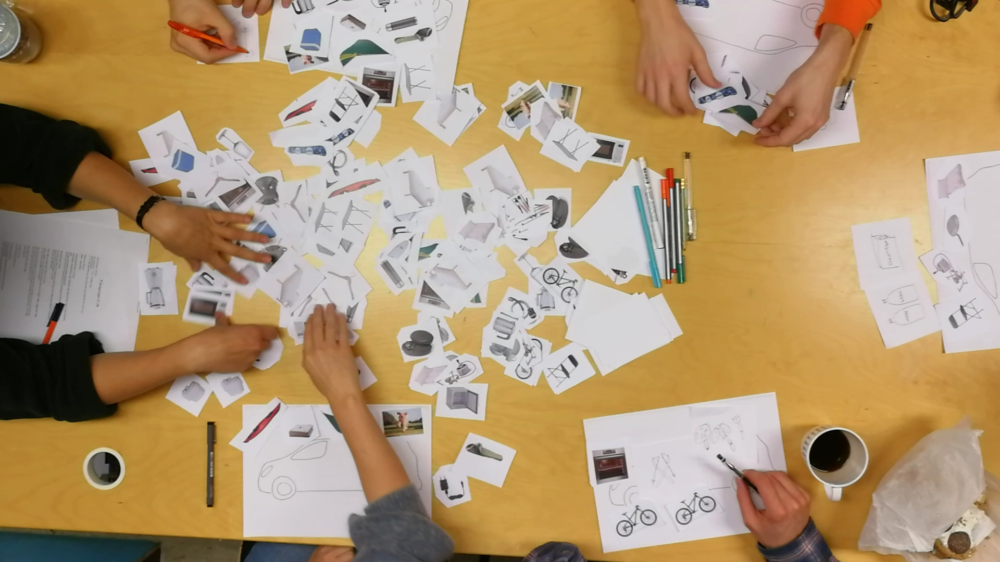
Cabin Campers ønsket et skalerbart og rimelig produkt som var mulig å snekre for hånd, samtidig som det skulle være appelerende for deres kunder. Dette var betingelser som lå til grunn for hele prosjektet. Resultatet viser en balanse mellom enkelhet og komfort, minimalisme og luksus. Campervanen er tilpasset reisende som ønsker å oppleve Norge på en eksperimentell men samtidig trygg og innbydende måte. Det er rom for viktige fasiliteter som kjøleboks, drikkevann, stekeplate, kjøkkenutstyr, behagelig seng og sitteplasser.
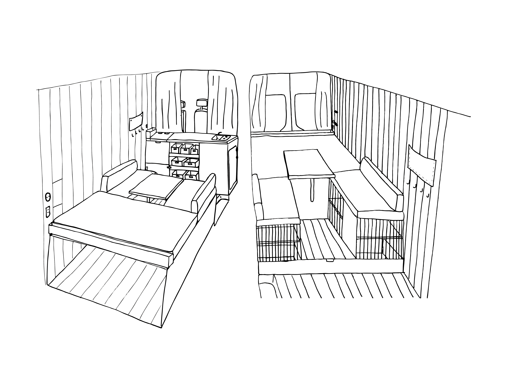
Gjennom prosjektet fikk vi muligheten til å reise med Cabin Campers sine biler og oppleve Norge som campingturister. Vi fikk også mulighet til å teste det ferdige produktet da bilene ble lansert våren 2019. Sjekk ut resultatet på cabincampers.no.
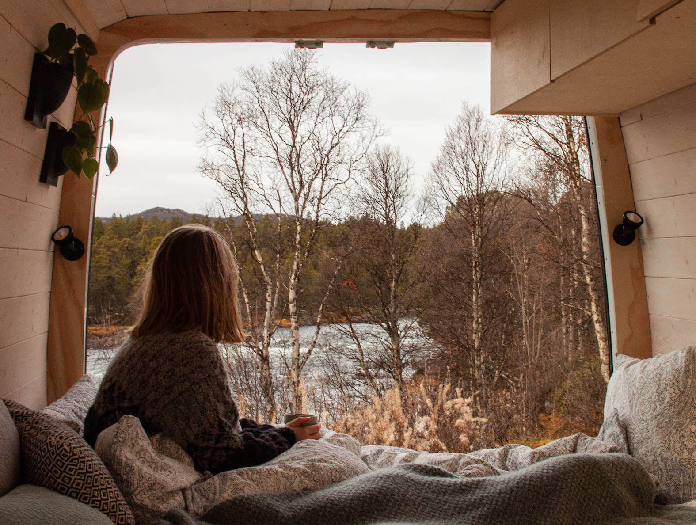
Dette prosjektet ga oss muligheten til å jobbe innenfor et annet hjørne av design enn hva vi var vant til, noe som var en morsom og lærerik utfordring. Som det første faget på studiet der man styrer sin egen prosess, fikk vi prøvd oss på prosjekplanlegging og hvordan strukturere et prosjekt fra bunnen av. Vi samlet også erfaringer fra å samarbeide med en bedrift, noe som bringer med seg både begrensninger og muligheter. Generelt var dette et drømmeprosjekt der jeg fikk mulighet til å vokse som designer og som samarbeidspartner.
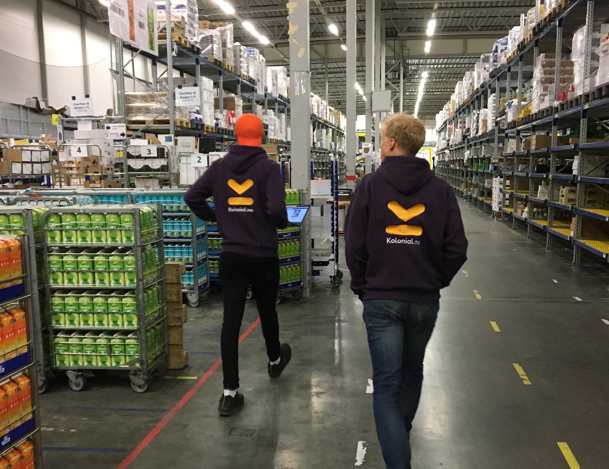
Et interaktivt verktøy for inventarkontroll på lageret til Kolonial
Sommer 2020
Problemforståelse, testing og tverrfaglig samarbeid
Problemforståelse, testing og tverrfaglig samarbeid
Sommeren 2020 jobbet jeg som tjeneste- og interaksjonsdesigner hos Kolonial.no, en matvarebutikk på nett som leverer varene hjem til kunden. Hvert trinn av tjenesten, lageret, leveringstjenesten og kundeplattformene, er utviklet og driftet av Kolonial. Gjennom sommeren jobbet jeg i et tverrfaglig team med utviklere og “data scientists” med oppgaven å utvikle et verktøy for å gjøre inventarkontroll på lageret enkelt, oversiktlig og brukervennlig. Dagens løsning møtte ikke kravene som var nødvendig for å ha god kontroll over inventaret, noe som førte til flere feil i systemet. På et lager med over 7000 varer var dette et essensielt problem å ta tak i.
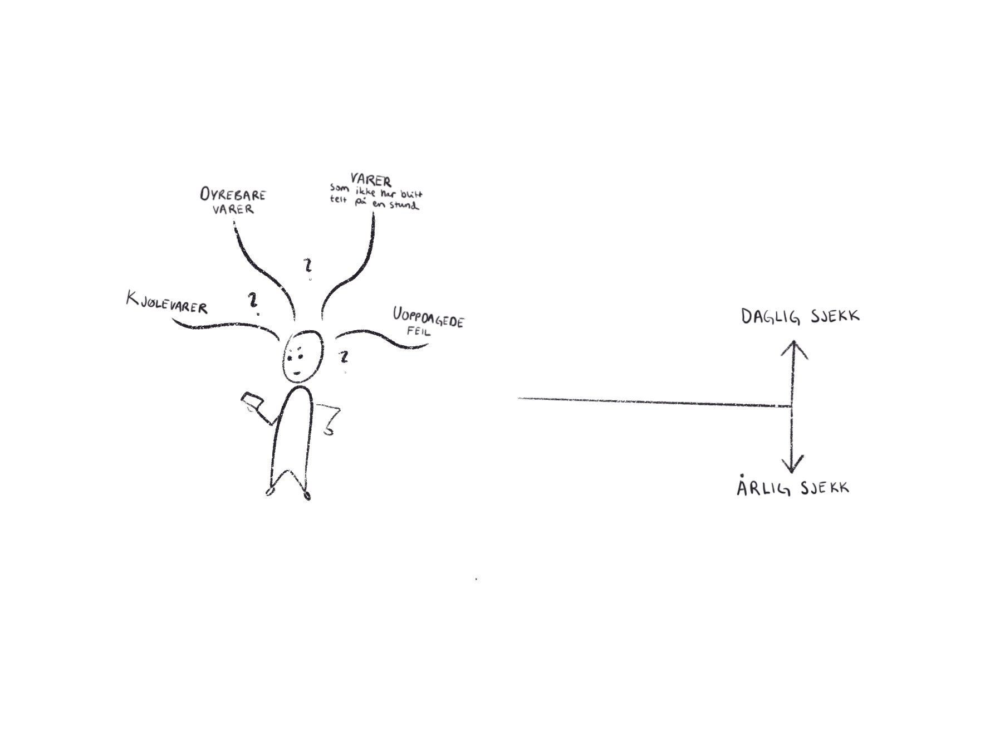
Gjennom besøk på lageret og samtaler med personer som sjekker inventaret daglig oppdaget vi at det er mange tilfeller som fører til at en vare har behov for å bli kontrollert. Løsningen var å lage en oversiktlig liste som differensierer mellom varer som haster og varer som kan vente, ved å sortere dem inn i en daglig og årlig liste. I tillegg utformet vi et telleverktøy som gjør det lettere å føre inn riktig mengde varer, og som gjør det lett å oppdage feil.
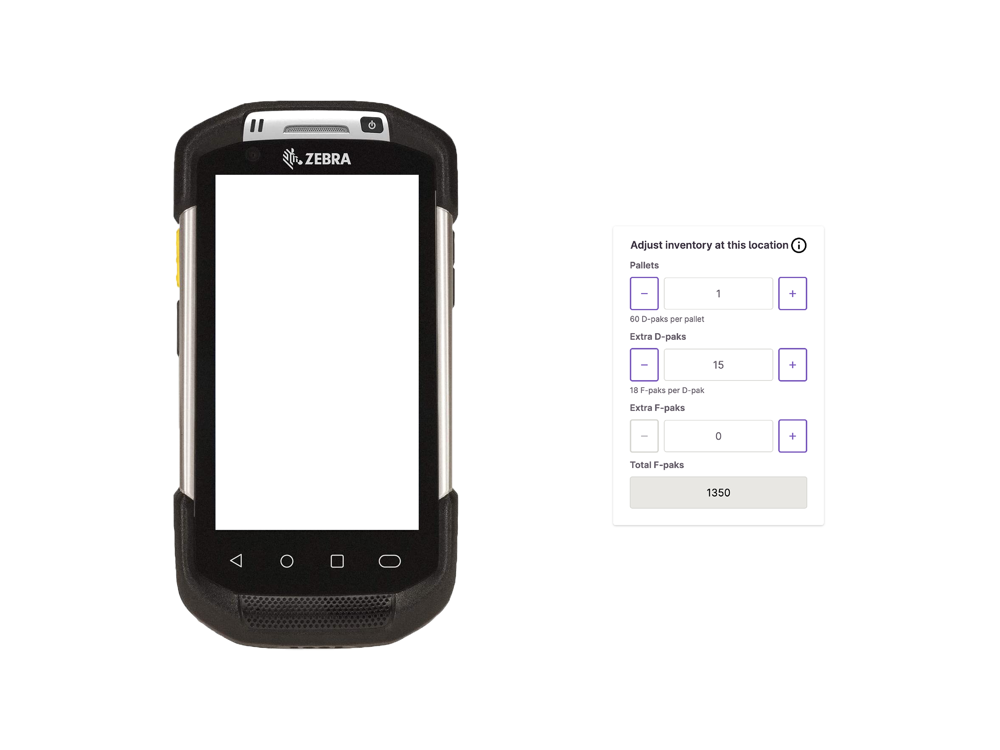
Gjennom å jobbe tverrfaglig klarte vi å fokusere på utviklingen av tjenesten og analysen av dataen, samtidig som alle var inkludert i en designfase som gikk ut på samling av innsikt, prototyping og testing. Dermed var vi trygge på å løse riktig problem på riktig måte fra start til slutt.
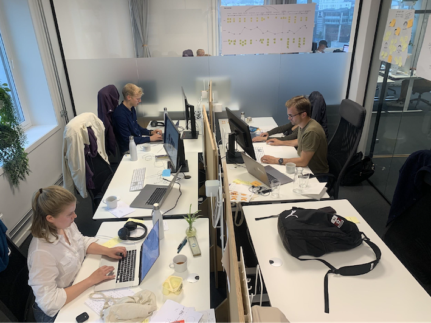
Prosjektet ga meg trening i å arbeide i et tverrfaglig samarbeid, og spesielt å formidle rollen design har i prosessen. Jeg fikk god trening i å lede innsiktsarbeid, ta beslutninger underveis og samarbeide med utviklere om utformingen av prototypen. Gjennom ansatte hos Kolonial lærte jeg om metoder og figurer som er nyttige å bruke, og ble flittig til å bruke vegger, post-its og tusjer. Oppsummert var dette en fargerik sommer!
En personlig nettside for ekspedisjonsreisende ved Hurtigruten
Sommer 2019
Prioritering og tverrfaglig samarbeid
Prioritering og tverrfaglig samarbeid
I løpet av sommeren 2019 jobbet jeg som UX-designer hos Bekk Consulting, der jeg ble plassert i et tverrfaglig team hos det norske cruiseselskapet Hurtigruten. Sammen med to utviklere fikk vi i oppgave å utvikle en personlig side for Hurtigrutens ekspedisjonsreisende med en MVP klar for produksjon mot slutten av sommeren.
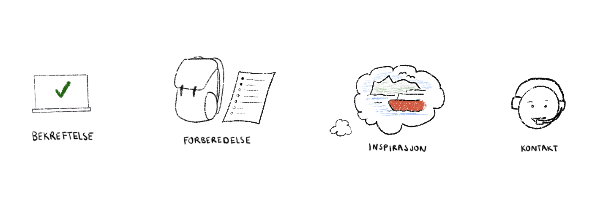
Gjennom å snakke med turister og Hurtigrutens tidligere kunder var det tydelig at brukeren har et behov for å bekrefte sin bestilling, forberede seg til turen, bli inspirert og være i kontakt med Hurtigruten. En stor del av prosjektet var å skalere oppgaven ned til å kunne svare på de viktigste behovene til brukeren samtidig som løsningen skulle være teknisk gjennomførbar. Ved å samle innsikt fra relevante brukere og Hurtigruten ble hovedfokuset å lage en nettside - “MyVoyage” (som tittelen) - som samler informasjonen om din bestilling og gjør den lett tilgjenglig og interaktiv.

Gjennom sommeren fikk jeg praktisk erfaring i å samarbeide med utviklere, teste ulike designprosesser og starte et prosjekt fra blanke ark. Prosjektet ga meg trening i å prioritere hvilke behov som skal dekkes først, samtidig som jeg tok et steg tilbake og så på hva produktet kan bli i fremtiden. Jeg fikk også oppleve livet som konsulent, og ble kjent med både Bekk og Hurtigruten som arbeidsplass.

While Waiting: En engasjernde plattform for utveksling av tanker mens man venter på toget
Høst 2019
Praktisk utprøving av et konsept
Praktisk utprøving av et konsept
Dette prosjektet var en del av mitt utvekslingsopphold i Lisboa, der jeg samarbeidet med en gruppe internasjonale designstudenter. Vår gruppe oppdaget at togstasjonene i nærområdet opplevdes som nakne og uengasjerende. Gjennom samtaler med reisende kom det fram at mange ventet opp mot 20 min på toget, og at de opplevde denne tiden som lite produktiv og kjedelig. Dermed ønsket vi å utfordre ventende passasjerer til å interagere med hverandre for å bedre utnytte tiden de bruker på å vente.
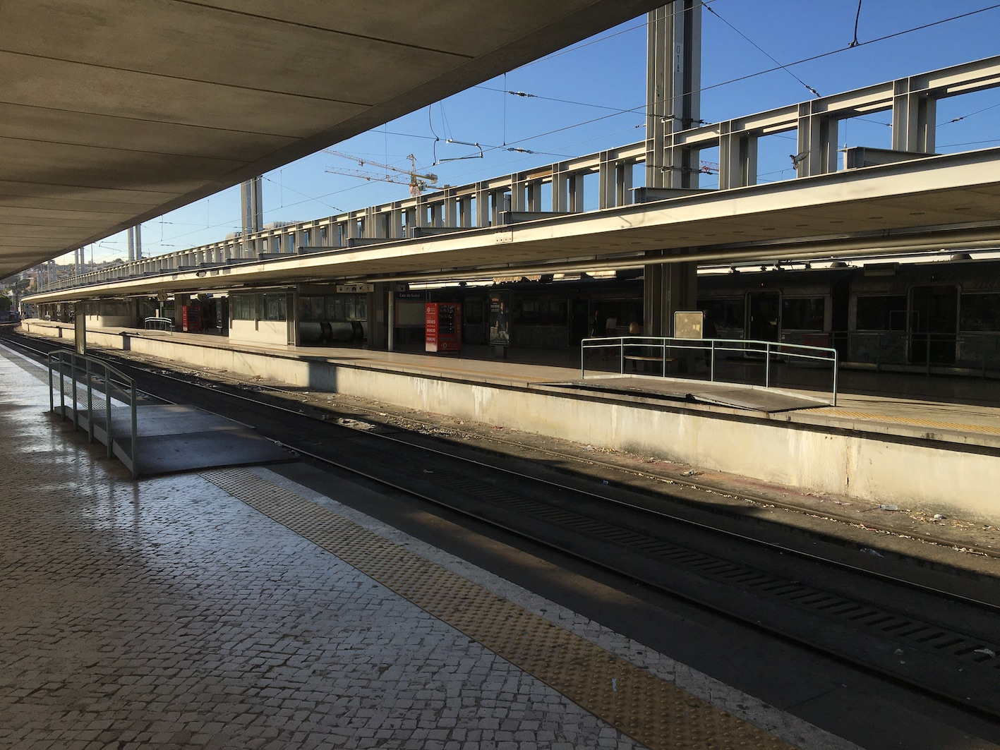
Vi utviklet dermed konseptet “While Waiting”: En mobilapp som inviterer folk til å tenke på bestemte emner og diskutere dem med hverandre mens de ventet på toget. Bidragene blir synlige på skjermer, slik at folk kan lese dem. Hver dag kommer et nytt tema, slik at folk kan diskutere det fra telefonen sin, eller gjennom de store skjermene på stasjonen. En stor del av prosjektet gikk ut på å teste konseptet gjennom et plakat-eksperiment som ble utført på universitetet.
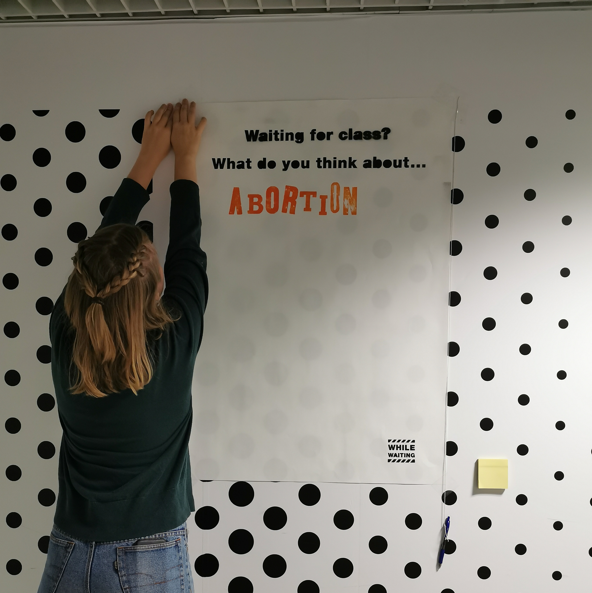
Seks hjemmelagde plakater med ulike temaer ble hengt opp i gangene der studentene ventet på forelesningene sine. Post-its og penner hang ved siden av. I løpet av tre dager samlet vi over 300 bidrag, hvorav 30% ble forkastet som søppelpost. Gjennom å analysere bidragene og intervjue studenter som hadde deltatt oppdaget vi at flesteparten brukte plakatene til å komme med oppriktige tanker og meninger. Mange trivdes med å uttrykke seg i offentligheten og de aller fleste synes det var innteressant å lese andres bidrag. Flere ganger oppstod det til og med klynger med post-its der respondenter svarte på hverandres tanker. Funnene viste at konseptet “While Waiting” bærer vann, og at det engasjerer de ventende til å bruke tiden sin på noe engasjerende og underholdende.
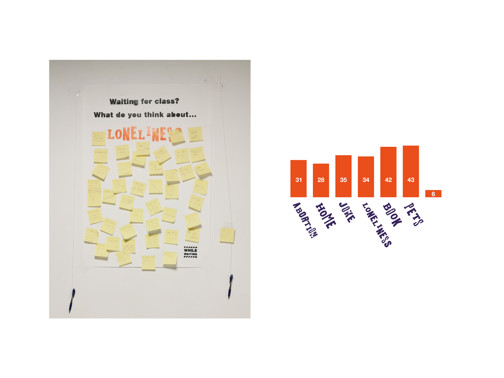
Gjennom prosjektet fikk vi muligheten til å teste ut praktiske og kreative metoder. Vi brukte lite tid til å definere probleme, men lenger tid på å teste den. Dermed fikk vi utforsket problemet og validert konseptet vårt gjennom praktisk utprøvelse. Jeg ble i tillegg tøffere i å ta kontakt med fremme og holde intervjuer. Kort sagt var det et prosjekt som utvidet vår komfortsone.